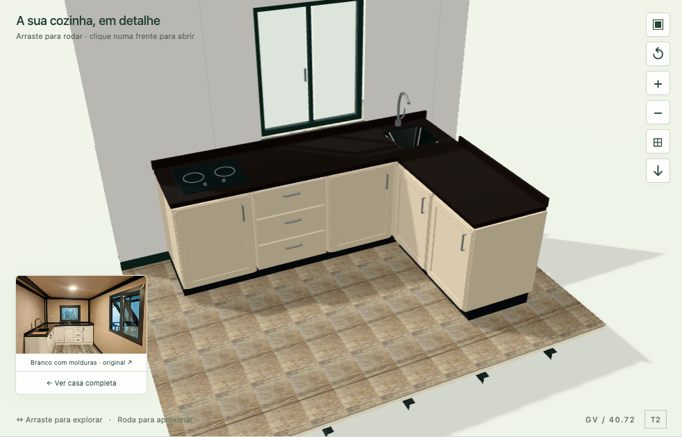
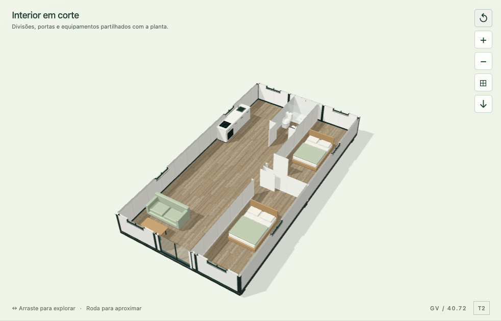
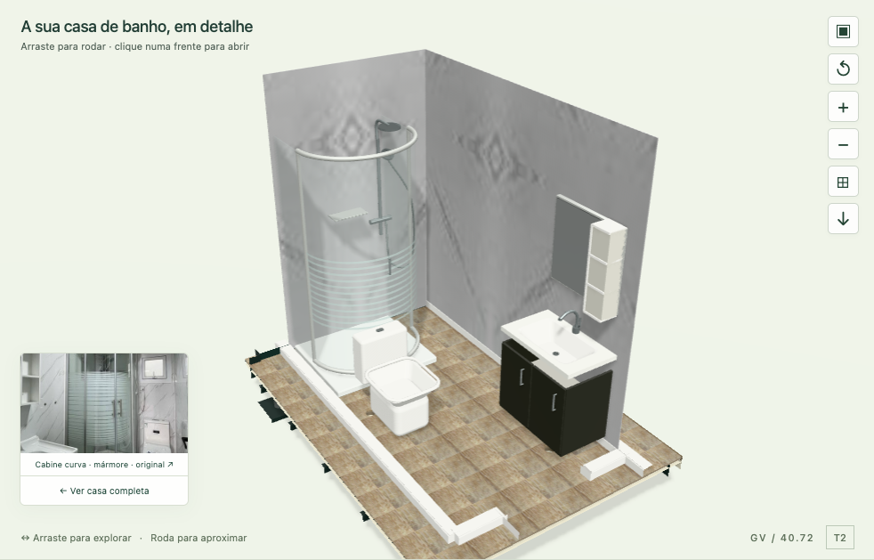
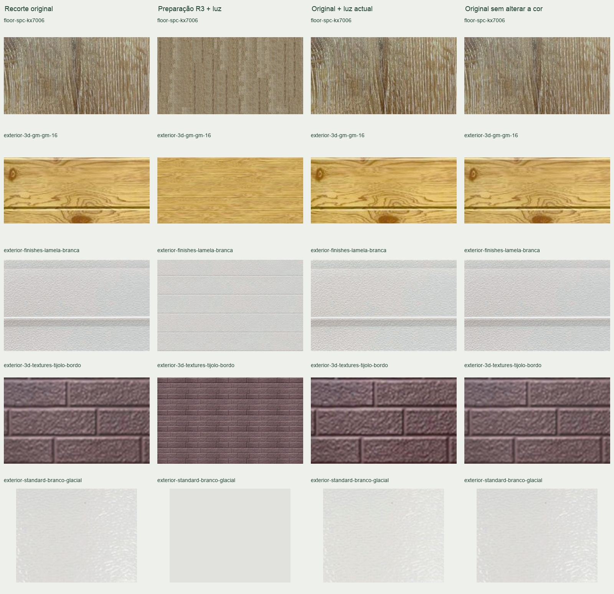

As 15 escolhas de cozinha produziam a mesma imagem 3D. O mesmo acontecia com os 17 ambientes de banho. Os identificadores eram guardados sem alterar o equipamento.
GREEN VILLAGE / REVISÃO 5 / 10.09.2026
A fotografia passa
a alterar o modelo.
15 cozinhas e 17 referências de banho com acabamentos e elementos próprios. A câmara mostra a divisão seleccionada, incluindo os equipamentos altos, e permite abrir frentes e gavetas.
Os testes de selecção produzem 15 imagens distintas de cozinha e 17 de banho. Abertura de mobiliário, aproximação, comparação e exportação partilham as escolhas da sessão.
Da vista geral ao detalhe



Cor digital verificável
O modo Original usa os recortes R2, preservando a orientação e os píxeis da fonte. Cor do catálogo remove a alteração da cor dos materiais por iluminação e exposição. A preparação R3 continua disponível como opção de suavização de emendas.

71/71 recortes R2 coincidem com as regiões das fotografias originais. Num teste de amostragem nativa 1:1, os cinco exemplos do modo original sem iluminação reproduziram 100% dos píxeis RGB, com erro máximo zero. Em tamanhos diferentes, a filtragem do ecrã altera a amostragem. Esta prova digital não estabelece equivalência física RAL/NCS nem elimina a luz já fotografada.
O que foi testado
| Área | Resultado |
|---|---|
| Escolhas de catálogo | 15 cozinhas e 17 ambientes, imagens distintas e identificadores correctos; sem modal obrigatório. |
| Geometria e estado | 25 grupos de testes: sete plantas, cozinha em U, interferências de implantação, configuração, fontes, materiais e detalhe móvel. |
| Expansão R4 | 1001 posições T2: nenhuma sobreposição adicional detectada acima da tolerância usada no ensaio, face aos 24 contactos de construção finais. A cinemática continua ilustrativa. |
| Navegação | 375, 768 e 1440 píxeis; teclado, órbita, abertura, zoom, reposição, resize e transições de vista. |
| Recuperação | Comparador fechado/trocado durante carregamento sem recursos órfãos; falha de textura e nova tentativa; configurações anteriores preservadas. |
Exportação conferida
Um exemplo com cozinha 12 em L e banho 16 foi exportado pelos controlos do estúdio. As duas páginas do PDF incluem as 14 linhas de escolhas; a imagem incorporada coincide píxel a píxel com o PNG descarregado.
{kind=link}
O modelo em movimento
30 segundos · 1920 × 1080 · 24 imagens/segundo. T2 com várias referências identificadas ao longo da visita; não é uma filmagem de uma casa construída.
{kind=link}
As auditorias de interacções e exportação foram realizadas antes da integração do filme; os dois pedidos de media então ausentes foram resolvidos e verificados separadamente na prova de reprodução.
Limites das referências
As cozinhas 01 e 14 têm película de protecção: o acabamento oculto não foi tratado como uma cor confirmada. A referência de banho 05 documenta sobretudo a sanita. Medidas de mobiliário, configuração das peças, cubas e ferragens são reconstruções adaptadas à planta; não substituem desenhos de fabrico. O SPC escolhido continua a aplicar-se ao pavimento; escolher uma fotografia de banho altera o seu ambiente e permite substituir separadamente o revestimento UV.